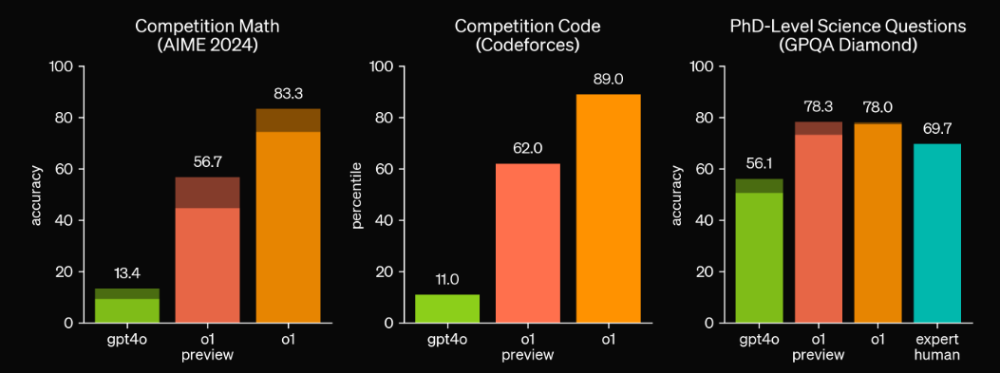
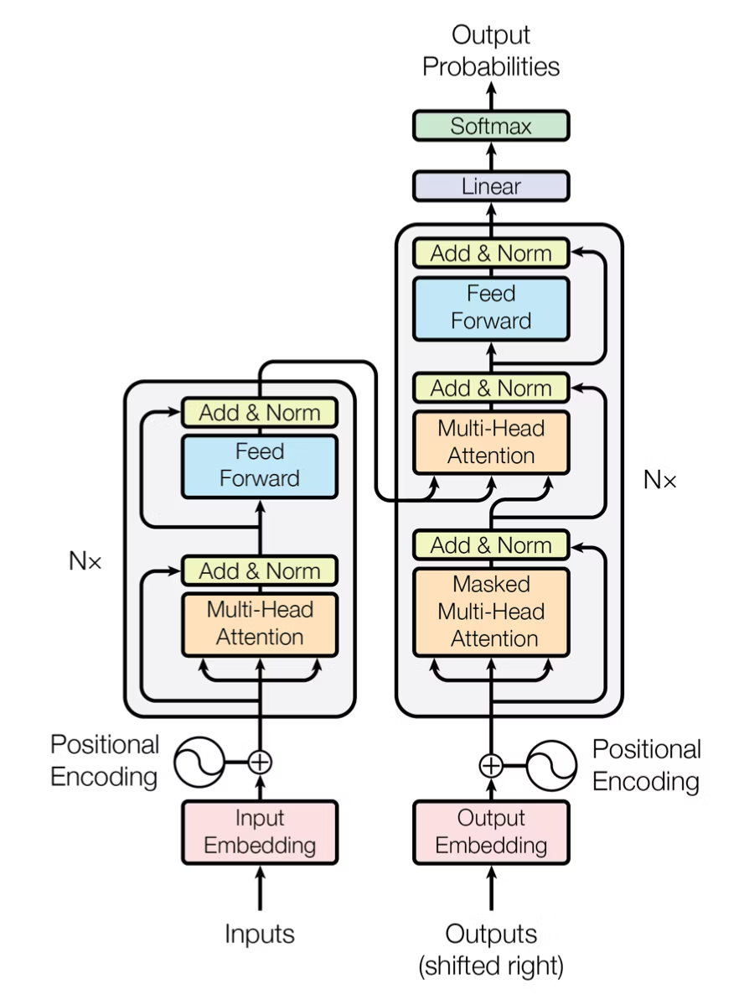
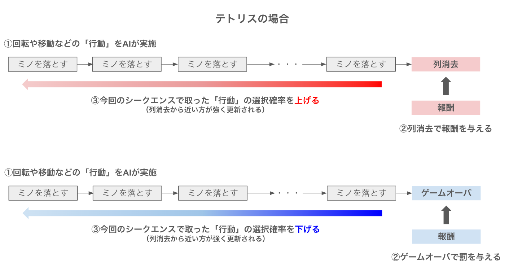
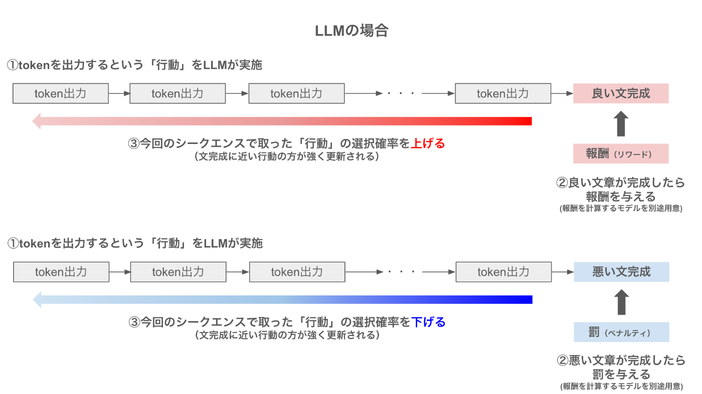
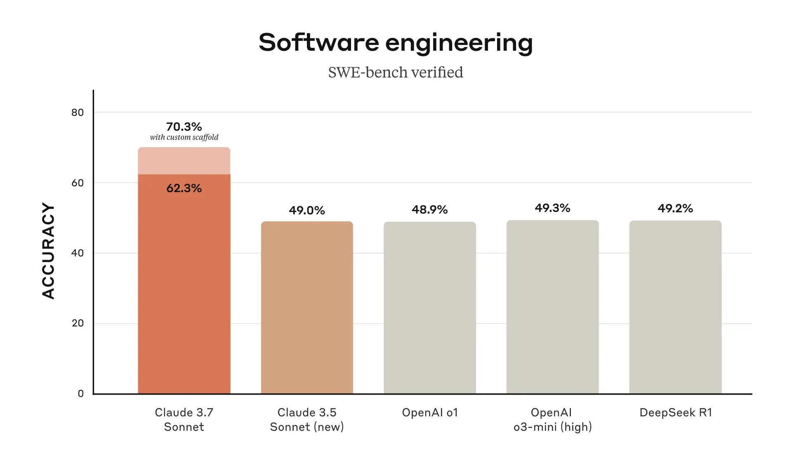
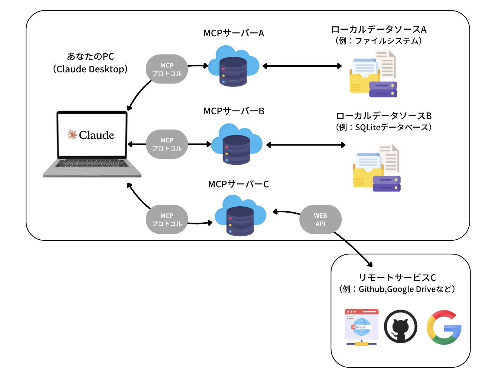

生成AIは学びの優先順位の変化を起こす
1. イントロダクション
この講義では、2024年以降の生成AIの進化を概観し、それに基づいて私たちはこれからの時代に何を学ぶべきで、何を学ぶべきではないのかという点についてお話ししたいと思っています。つまり、旧時代的なスキルセットと、新時代におけるスキルセットが大きく異なる転換点を迎えているというのが今回の講義の話題です。
皆さんが受験勉強を頑張っていた2024年は、生成AIの進化にとって実は根本的な変化が生まれた年でもありました。2022年10月にChatGPTが発表されて以来、人と会話できるAIが生まれたことにとても驚きを覚えました。
特に最初のうちはハルシネーションが多く見られましたが、ただ最初の大きな変化は「英語」への翻訳の意味では、従来のモデルと比較して圧倒的に優秀であり、「英語」学習の意味が問い直される必要がありました。そのあと、ChatGPTからさまざまなサービスを利用するというPluginの利用ができるようになり、食べログなどの外部サービスとの連携が図られるようになりました。そして、2023年の終わり頃になると、日本語能力も向上し、人間がテーマを与えるとそれについて代筆する程度のことは可能になりました。
これがきっかけで、2024年という年は、大学では生成AIで作られたレポート課題にどう対処するの？という大きな課題と向き合い始めることになりました。また、知能レベルも向上しており、医師国家試験に合格したり、薬剤師試験に合格するという国家試験レベルの問題にも対処できるだけの知識を持つようになります。しかし、この当時のAIは英語や国語の知識、文章問題に対する能力は高かったのですが、一方でSTEM領域の問題を解く能力はほとんどありませんでした。また、プログラミング能力も徐々に改善してはいましたが、まだまだ使い物にならないねという声がほとんどだったと思います。
しかし、2024年の9月には Open AI o1-preview と呼ばれる従来の生成AIを大幅に上回るモデルが発表されました。この辺りから、STEM領域とプログラミング領域の能力が徐々に向上し始めます。これは「長考」ができるようになったことが大きな理由です。あとで説明しますが、長くじっくり考えるというのは、AI自身が何が正解かを探っているという状況を指します。これによるSTEM領域の圧倒的な性能向上が起こったのです。

さて、ここまで性能が伸びても、この先へ進んでいくために、o1-proが発表されています。o1よりもさらに長い思考ができ、数学、プログラミング、博士課程レベルの質問への回答能力が大幅に向上するという出来事が起こりました。

そして、いま Open AI は o3-mini-high, GPT 4.5を市場投入し、一方で Anthropic は Claude 3.7 Sonnet を市場に投入し、激しいAIの精度向上の戦いが行われています。そして、これらのAIはどれを採用しても、おそらく僕よりもはるかに賢く、はるかにデータサイエンスの問題も解けるはずです。
では、そんな時代が来た今、私たちは何を優先的に学び、何を捨てるべきでしょうか？それが今回の講義でわたしから、皆さんに提案したいことです。
2. AIの仕組みとケーススタディ
生成AIによって何が可能になるのかという話は、わたしたちの研究活動がどのように変化するのかという話題とも実は直結しています。ここでは、生成AIの基盤技術である Transformer と、生成AIに思考力を加えるための強化学習アプローチについて紹介し、現在の生成AIの能力について正しい認識を獲得することを目標にします。ただし、これらについて全て理解できる必要はありませんが、ふんわりとした雰囲気を理解してください。
2.1 Transformer と 推論モデル
2.1.1 Transformer and Self-Attention Mechanism
Attention is all you needという論文で提案された手法です。図にすると、こんな感じにの仕組みになります。これだけを見ても、なにこれ？って感じですよね。この中に使われている、Multi-head Attentionと呼ばれる機構が非常に重要な役割を果たしています。

一般的に私たちが文章を執筆することを想像してください。例えば「日本の人口ピラミッドの変化を考えた上で、医療費の負担の現状と今後について」というテーマについて文章を執筆しなさいという問題を考えましょう。その場合、執筆をするには何をしないといけないかというと、「テーマを記憶」しつつ、「次に続く文章を予測」して執筆する必要があります。この仕組みを実装しているのが、Transformerと呼ばれる仕組みです。そしてもう1つ重要なのは、人間が自然に行なっている「文章の意味理解」をどのようにしてコンピュータに行わせるのかという部分です。そこで重要なのが、この図のMulti-head attentionという部分になります。
機械と私たちの間にある本質的な違いというのは、文字とイメージが結びついているかどうかという部分です。しましまな模様＋ウマという足し算は、私たちの中ではしまうまになるでしょうが、機械にとっては全然わからないものです。そこで機械にこの能力を獲得させるためには、単語と単語の距離や関係性を学習させる必要があります。また、文章であれば並び順を考える必要もあります。さらに、次に続く文章を予測するためには、質問文のどこに大事な単語があるのか、それは他の単語とどう繋がっているのかを理解する必要があります。これを可能にしたのが、Multi-Head Attentionの仕組みです。
2.1.2 強化学習の統合：
詳しい説明は、こちらの解説記事がとても参考になります。強化学習のイメージを捉えていただくために、こちらの図だけ引用します。
次の大きな問題は、生成した文章の良し悪しを評価していないということです。一度生成された文章を、生成AIが見直すことはありません。しかしそれだと、あくまでも確率に基づいた生成をしているので、嘘の情報や質の低い文章が生成されてしまいます。人間でも同じです。一回書いただけの文書を提出はしないでしょう。
人間が執筆する、または問題を解く際には、何度も見直しをして文章の前後関係を精査したりすることで文章の質を高めますよね。同様に生成AIもこれを行います。文章の質の良し悪しを計算することができるような価値判断をするAIを作ることで、生成された文章の良し悪しを判別させます。つまり、この価値判断をするというのは、プロンプト（指示文）＋生成AIが出力した文章を入力すると、点数づけをしてくれるようなAIだと思うとわかりやすいです。


そして、この文章の点数をつけるAIが、数学やプログラムなどに応じてさまざまなものを用意しておくと、数学やプログラム生成において、質問に対して十分に質の高い回答が得られるということになります。このような方法を用いて、強化された現在の生成AIの能力の高さを見てみましょう。
2.2 知識問題に対する解答力
こちらのウェブサイトでは、2025年に実施された医師国家試験を、現在の生成AIに解かせて正答率を確認した結果が掲載されている。o3-mini-highによる得点は、必修の得点は上位10%程度で、一般臨床問題では第3位の成績に該当するとのこと。

同様に、薬剤師国家試験についても2024年9月時点でこちらで情報が発表されたが、o1-preview に解かせたところ正答率は100%だったとのことで、知識問題に対する正答率は十分であることがわかる。国家試験を受ける人は、これらのAIがどのように思考して解いているのかをトレースすることで正答率を上げることが可能かもしれない。
2.3 東大数学・京大数学に対する生成AIの能力
2011年からロボットは東京大学に入れるか？というプロジェクトが、日本の国立情報学研究所が中心になって実施されてきた。2016年に大学入試センター試験、2021年に東大入試突破を目指してきたが、2016年に凍結されたプロジェクトがある。その中でも最も難関だったのは数学であり、1問も正解できないというレベルであった。
2025年の入試問題の数学ではどうだったのか？といえば、東京大学の数学の問題は大問が6つあり、それを5完半した（リンク）さらに、京都大学の問題は全ての問題を正解したということだった。つまり、いよいよ与えられた問題を解くという力については、上位1％には到達していることがわかる（僕はそもそも5問も解ける自信がない...）。
このことからもわかるように、数学的に正しく与えられた問題については、生成AIは解くことができるようになっていることがわかる。
2.4 コードを書く能力
健康データサイエンスでは、スポーツ選手の動作分析や、リハビリテーションや介護の動作解析を行うという研究テーマがある。このような手法を、実際に自分でゼロからプログラムをするとなると、非常に困難でさまざまな知識が要求される。では、現在の生成AIのプログラミングの能力はどれくらいあるでしょうか？
これを測るためのベンチマークとして、SWE-bench というものがあります。SWE-benchは実際のソフトウェア開発過程で発生する課題に対して、AIモデルの性能でどこまで対応できるかの測定を目的としており、以下の特徴があります。
- 実際のGitHub IssueとPull Request(現在は主にPythonに関連したPyPlパッケージ関連のリポジトリがターゲット)から抽出された現実的なタスク解決を試みる
- 単なるコード生成だけでなく、バグ修正や機能実装など多様なタスクを含む
- 自動評価システムによる客観的な性能測定
つまり現段階の最新大規模言語モデル(AI)が、 現代のリアルなアプリ開発やソフトウェアエンジニアリングの問題をどこまで人間と同じようにこなせるかを定量的に測ることを目的としたベンチマークスコアということです（リンク）。
これにおいて Claude 3.7 Sonnet の能力は以下の結果からもわかるように非常に高く、これを踏まえると、現在の人間のエンジニアの上位1％よりも上に位置する可能性があるそうです。

つまりここから何が言えるのかというと、目的となるコードの方向性がわかっているなら、自分が書かなくても、適切に制御さえすればAIが書いてくれるということです。
そこで、姿勢推定を行うタスクを claude 3.7 Sonnet を用いて自作してみた結果を示そうと思います（Google Colab）。姿勢推定には、mediapipeや、YOLOなどさまざまなモデルがあります。今回はmediapipeを使って、静止姿勢を撮影し、その結果から姿勢の状況を答えてくれるアプリケーションを開発します。
実はこの方法は、リアルタイムのデータにも応用できるため、動きを伴う動作の解析も可能です。例えば、左腕と右腕の可動域に差があるかどうかを検出したりできます。
- 姿勢推定技術：
- コンピュータビジョンアーキテクチャ（PoseNet、AlphaPose、OpenPose）
- 2Dと3Dのポーズ推定方法論とトレードオフ
- 複雑な環境における複数人追跡アルゴリズム
-
リアルタイム性能最適化技術
-
スポーツへの応用：
- アスリートパフォーマンスにおける動作パターン分析
- 生体力学的偏差からの傷害リスク評価
- 即時フィードバックによるトレーニング技術の最適化
-
ケーススタディ：プロ野球の投球メカニクス、水泳のストローク分析
-
健康モニタリングシステム：
- 神経学的症状の早期発見のための歩行分析
- リハビリテーション進行の定量化
- 高齢者ケアのためのリモートモニタリングソリューション
-
電子健康記録との統合
-
デモコンポーネント：
- 参加者の動作パターンのライブキャプチャと分析
- 生体力学的指標の視覚化
- 参照動作プロファイルとの比較
- エラー検出と修正推奨
リサーチ能力
仕事や研究において大半の時間を使うと言っても過言ではないのは、先行事例調査と呼ばれる作業です。これは、何かを行うときに自分たちの方法が、どういう立ち位置なのかを明らかにする作業なのですが、これには非常に時間を取られます。また、大学・会社どんな組織でも、何か新しい取り組みをするというときには、他の会社はどういうふうにしているかを調査する必要があります。このような調査を実行する際には、わたしたちは google の窓や youtube の窓を叩きまくって調査してきました。
これは過去にも生成AIで取り組まれてきたことではあったのですが、そもそも情報がないものをあるかのようにうそぶいたりするために、文献調査をするのには適していないというのが一般認識だったのです。しかし、o3-mini-high に搭載された「Deep Research」は、この問題を解消しており、調査した結果の根拠をURLで提示したり、書籍を提示させたりできます。およそ人間が2時間〜3時間かかる作業を10分程度で行うことができるので、大幅な時間短縮を可能にしています。この機能は 2025年の2月にリリースされて、無料ユーザーは現在使用できませんが、今後は解放される可能性があるということです。
実際のレポートを確認してみましょう。今回は、順天堂大学健康データサイエンス学部について、Deep Research で評判を調査してみます。（リンク）。
次に、この情報を加工します。ここでは、この結果を Claude 3.7 Sonnet に与えることで、綺麗に加工してみます（使うプロンプトはこちら）。完成したものがこちらになります。情報からインフォグラフィックの作成まで、一気通貫に作成できてしまうのです。
RAG から Model Context Protocolへ
次に、2024年にできて注目したいのは、検索拡張生成（RAG）と呼ばれる技術と、Model context protocol (Anthropic) と呼ばれる技術です。特に、ここではMCPに注目します。一般的に大学や企業ではデータをオープンにしたくはないという問題があります。そこで、ローカルデータソースを用意して、それを参照してClaude に回答させるというシステムがMCPです（こちら の記事がわかりやすいので参照してください）。

3. 根本的なパラダイムシフト
さて、ここまでの講義を聞いた中で、わたしたちは何を勉強すればいいんですか？そもそも勉強はする必要があるのか？という話が出てくるはずです。ここからは、なぜ勉強をこれからしないといけないのかという話にシフトしていきましょう。まず、最も重要かつ根本的な主張はAIがどれだけ進歩しようとも、AI出力に対する人間の責任はなくならないということです。もし、この点が変化してしまったのなら、新しく考え直す必要があります。しかし、今の現状では、この状況は無くなることはありません。つまり正しさの検証を常に必要としています。
そして、もう1つ重要な視点があります。問題というのは人が作るということです。多くの問題は、人間の活動の中で生まれる疑問や、困難に起因します。つまり、何が問題なのか？はAIが決めるものではなく、人間にしか決めることはできません。つまり、まとめると、人間の役割は本質的には以下の方向へとシフトします：
- 問題定義：範囲と制約の確立
- 出力検証：解決策に対する責任の負担
次の疑問は、世界にある問題はすべてAIが解ける形になっているのか？ということです。なっていないのです。人間が感じた問題を解消するためには、そのまま人間が解くか、AIが解ける形に人間が整形するかの2つの方法があります。従来はAIに解く力がなかったからほとんど使われていなかっただけで、これからはAIを使って問題を解消するということができるようになります。つまり、私たちに求められる力は、次の力です。
- 問題翻訳 : 問題の本質を見抜き、AIが解ける形に持っていくこと
さて、このようにすると何が変わるのかというと、「問題を定義すれば、自分で解く必要がない」ということがわかります。よって、英語や数学の問題を自分で解く必要がありません。じゃあ勉強しなくていいか？というとそんなことはなく、出力検証が残っているのです。つまり、得られた結果が正しいことを自分でその過程を追って、証明できなくてはなりません。一見簡単に見えますが、これは批判的思考と呼ばれる力です。
私たちが、課題を出すときの問題が次のように変わります。2つの例を出します。
3.1 数学の問題の変化
昔の問題
次の不定積分を求めなさい。
$$
\int \frac{x}{(1+x^2)^2} \, dx.
$$
これからの問題 以下の問題とその解答例には、一見正しい置換法の手順がとられているものの、実は誤りが潜んでいます。解答例のどこに誤りがあるのか、またその誤りが最終的な答えにどのような影響を及ぼすのかを具体的に説明してください。
【問題】
次の不定積分を求めなさい。
$$
\int \frac{x}{(1+x^2)^2} \, dx.
$$
【解答例（ある学生による回答）】
- 置換 \(u = 1+x^2\) とおくと、微分して \(du = 2x\,dx\) となる。そこで \(x\,dx = du\) と置き換える。
- これにより、積分は
$$ \int \frac{x}{(1+x^2)^2} \, dx = \int \frac{1}{u^2}\,du. $$ - \(\int u^{-2}\,du\) の積分は \(-\frac{1}{u}+C\) であるから、
$$ \int \frac{x}{(1+x^2)^2} \, dx = -\frac{1}{u}+C = -\frac{1}{1+x^2}+C. $$
3.2 レポート課題の変化
昔の問題
年収103万円の壁とは何か説明し、この年収103万円の壁による問題点を述べなさい。
これからの問題
年収103万円の壁とは、基礎控除48万円と、給与所得控除55万円を合わせた103万円を年収が超えると所得税が発生するというルールである。 これについて調査したレポートを読んで、この内容が適切かを検証した上で、あなたの立場を明確にして、意見を述べなさい。
3.3 生成AIによって偏差値のみに依存しない社会が来る
このことからもわかるように、目の前に与えられた問題をただ解く能力ではなく、目の前に与えられた状況から、そもそも状況説明が正しいのか？解答へ至る道筋に矛盾がないか？そもそも問題の定義は正しいか？という疑問を常に持ち続ける必要がある。
つまり、そもそもどれだけ問題を知っているのか？どれだけ問題を発掘できるのか？それは本当に問題か？解決法や解決策が正しいのか？という与えられた問題を解く以外の能力が重要になるという時代に突入する。
4. 生成AI時代に不可欠なスキル
4.1 ドメイン専門知識と問題理解の解像度向上
- 問題特定方法論：
- 研究文献におけるギャップ分析のための体系的アプローチ
- ニーズ評価のためのステークホルダーエンゲージメント
- 高影響対扱いやすい問題の識別
-
曖昧な課題の明確に定義された質問への変換
-
問題理解の解像度向上：
- 「イシューより始めよ」の原則に基づくアプローチ
- 表面的問題から根本的課題への掘り下げ
- 複雑な問題の構成要素への分解能力
- 解像度を段階的に上げていく問題定義の反復プロセス
-
高解像度の問題理解がAIプロンプト品質向上に直結する原理
-
自己検証技術：
- 適切なテストケースの構築
- ドメイン固有出力のための批判的評価フレームワーク
- 幻覚と新しい洞察の区別
-
専門分野におけるAI知識の限界の理解
-
知識の深さと幅のトレードオフ：
- AIツールを指揮する上での専門知識の価値
- 境界横断的イノベーションのための学際的知識
- アルゴリズム支援による理解の深さのバランス
- ケーススタディ：精密医療における専門家対一般家アプローチ
4.2 数学的形式化
- 問題変換技術：
- 自然言語記述から数学的表記への変換
- 異なる問題タイプに適した数学的フレームワークの特定
- 最適化問題における制約の形式化
-
変数の特定と関係モデリング
-
数学的モデリングアプローチ：
- 統計的モデリングの基礎（回帰、分類、クラスタリング）
- 因果関係のための確率的グラフィカルモデル
- 動的システムのための微分方程式
-
複雑な関係のためのネットワーク表現
-
抽象化と一般化スキル：
- 一見異なる問題間のパターン認識
- 次元削減技術
- 不変性と対称性の特定
- ドメイン間での問題構造の転送
4.3 検証と妥当性確認
- 証明検証方法論：
- 論理的一貫性チェック
- エッジケースの識別とテスト
- 帰納的対演繹的推論評価
-
AI生成証明における一般的な論理的誤謬の認識
-
経験的妥当性確認アプローチ：
- 仮説検証のための実験設計
- 統計的有意性評価
- 交差検証技術
-
AI生成結果の複製戦略
-
ソリューション品質評価：
- パフォーマンス指標の選択と解釈
- 計算効率分析
- 様々な条件下での堅牢性テスト
- 確立されたベンチマークと人間のパフォーマンスとの比較
4.4 コミュニケーションとプロンプトエンジニアリング
- 英語能力の重点：
- 正確なコミュニケーションのための技術語彙の開発
- AI研究文献のための読解戦略
- AI応答品質を向上させる構文パターン
-
科学的英語向上のためのリソース推奨
-
プロンプトエンジニアリング原則：
- 思考連鎖プロンプティング技術
- 役割ベースのプロンプティング戦略
- 反復的改良方法論
-
コンテキストウィンドウ管理技術
-
制約と要件の表現：
- 明示的対暗黙的制約指定
- 競合要件の優先順位付け
- 成功基準の定義
- 許容範囲対点解の定義
4.5 構造化情報管理とテキストベースのドキュメンテーション
- Markdown構文とアプリケーション：
- 見出しを使用した階層的文書構成
- リストと表を使用した情報チャンキング
- コードブロックの使用
-
リンクと参照管理
-
テキストベースドキュメンテーションの優位性：
- PowerPointからMarpへの移行推奨
- テキストベースプレゼンテーションの機械可読性と検索性
- バージョン管理システム（Git）との統合効果
- 知識の累積的構築のためのテキスト中心アプローチ
-
プレゼンテーションと文書の統一による一貫性確保
-
知識組織パターン：
- 順次対階層対ネットワーク情報構造
- 複雑性の段階的開示
- 比較分析のための並列構造
-
繰り返し情報タイプのためのテンプレート開発
-
従来の文書形式の限界：
- 独自形式の解析課題
- PDFにおける意味構造の喪失
- プログラム的アクセスと修正の困難さ
- 非構造化形式からの情報抽出課題
4.6 コードリテラシー
- 生成コードの評価戦略：
- 構文的正確性評価
- 論理的健全性検証
- 効率性とパフォーマンス分析
-
セキュリティ脆弱性の特定
-
作成せずに理解する：
- コードのための読解技術
- アーキテクチャパターン認識
- データフロートレース
-
機能目的の識別
-
テストと検証アプローチ：
- 検証のための単体テスト開発
- エッジケースの特定
- 統合テスト戦略
- パフォーマンスプロファイリング方法論
4.7 協働マインドセット
- 協働パートナーとしてのAI：
- 効果的な人間とAIの協働のための精神モデル
- 人間対AI認知の強みと弱みの分析
- 補完的能力フレームワーク
-
生産的フィードバックループの開発
-
インタラクションパターン開発：
- 問題探索のための会話戦略
- 反復的改良技術
- 知識抽出方法論
-
エラー修正プロトコル
-
人間とAIチームの心理的側面：
- 自動化バイアスの克服
- 適切な信頼調整
- 創造的エージェンシーの維持
- 倫理的責任の分配
5. 大学教育における実践的実装
- 日常的なAIインタラクション実践：
- 概念理解のための朝の質問セッション
- 複雑な読み物や研究論文を説明するためのAIの使用
- AI支援による協働問題解決
-
AI応答を評価するための反省実践
-
構造化学習アプローチ：
- 段階的スキル開発タイムライン
- AI支援と独立作業のバランス
- AIインタラクションのための文書化実践
-
AI-人間協働アウトプットのピアレビュー
-
ツール選択と統合：
- 異なるAIプラットフォームの評価基準
- 既存の学術ワークフローとの統合
- 異なるAIサービスの費用対効果分析
-
学術環境におけるプライバシーとデータセキュリティの考慮
-
評価の進化：
- AI時代におけるプロセス対アウトプットの評価
- スキルベースの評価フレームワーク
- AI支援のための文書化要件
- 学術的整合性基準の適応
6. 結論
生成AI革命は、どのスキルが優先的に開発されるべきかの根本的な再考を必要とします。最も価値のある将来の能力は、解決策生成そのものではなく、問題定式化と解決策検証に集中する。
拡張結論と将来展望
生成AIによってもたらされる変革は単に技術的なものではなく、知的作業がどのように行われるかについての根本的な変化を表しています。健康データサイエンスの新入生にとって、これは課題と前例のない機会の両方を生み出します。知識習得と問題解決アルゴリズムを重視する伝統的な教育モデルは、以下を優先するモデルへと進化する必要があります：
- 批判的思考と問題定式化
- 判断と検証能力
- 効果的な人間とAIの協働戦略
- 技術的流暢さと組み合わせたドメイン専門知識
本講義では、生成AIシステムの現在の能力を概説し、健康科学におけるその応用を示し、この新しいパラダイムで繁栄するために必要なメタスキルを開発するためのフレームワークを提供しました。これらのツールを受け入れながら、創造性、倫理的判断、批判的評価という人間特有の能力を育む学生は、自動化によって置き換えられるのではなく、自分の分野でリードする位置に置かれるでしょう。
健康データサイエンスの未来は、AIが人間の科学者に取って代わるのではなく、人間の専門家の創造性と知恵と、人工システムの処理能力とパターン認識能力を組み合わせた新しい形の知能拡張によって特徴付けられるでしょう。この未来に備えるには、技術的理解と、人間と知的機械の関係をどのように概念化するかについての哲学的シフトの両方が必要です。